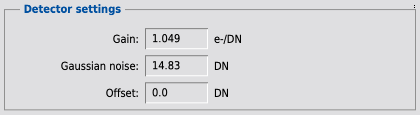

1 Description
[hide]
MureDenoiseDetectorSettings estimates detector settings for use by the MureDenoise script.
The script requires as input two uncalibrated flat frames and two bias or two dark frames. The use of two dark frames rather than two bias frames allows the script to account for dark current noise.
The medians of the two uncalibrated flat frames should be equal within 10%. The medians of the two bias or two dark frames should be equal within 10%.
The script provides values for detector gain, detector Gaussian noise, and detector offset for use by the MureDenoise script.
The script also provides a measure of the median flat frame exposure, in the form of the median of the pixel-wise mean of the center cropped bias- or dark-subtracted flat frames. To provide sufficient signal-to-noise ratio and to avoid near saturation nonlinearity, this measure should be between roughly 30% and 70% of detector full-well.
This document describes MureDenoiseDetectorSettings Version 1.2.
1.1 Algorithm
1.1.1 Detector gain
Compute the bias- or dark-subtracted flat frames. Compute the pixel-wise sum and pixel-wise difference between the center cropped bias- or dark-subtracted flat frames. Frames are cropped to the central 50% frame area. Compute the median of the local means of the sum. Compute the median of the local standard deviations of the difference. Detector gain equals the normalized ratio between the median local mean and the square of the median local standard deviation.
1.1.2 Detector Gaussian noise
Compute the pixel-wise difference between the bias or dark frames. Compute the median of the local standard deviations of the difference. Detector Gaussian noise equals the normalized median local standard deviation.
1.1.3 Detector offset
Zero. Detector offset should be set to zero for denoising calibrated images with no pedestal.
2 Usage
[hide]
2.1 MureDenoiseDetectorSettings
2.1.1 Calibration frames
-
Uncalibrated flat frame 1
-
Uncalibrated flat frame 1. The medians of the two uncalibrated flat frames should be equal within 10%.
-
Uncalibrated flat frame 2
-
Uncalibrated flat frame 2. The medians of the two uncalibrated flat frames should be equal within 10%.
-
Bias or dark frame 1
-
Bias or dark frame 1. The medians of the two bias or two dark frames should be equal within 10%.
-
Bias or dark frame 2
-
Bias or dark frame 2. The medians of the two bias or two dark frames should be equal within 10%.
-
Flat frame exposure
-
A measure of the median flat frame exposure, in the form of the median of the pixel-wise mean of the center cropped bias- or dark-subtracted flat frames. To provide sufficient signal-to-noise ratio and to avoid near saturation nonlinearity, this measure should be between roughly 30% and 70% of detector full-well.
2.1.2 Detector settings
-
Gain
-
Estimated detector gain.
-
Gaussian noise
-
Estimated detector Gaussian noise.
-
Offset
-
Estimated detector offset. Detector offset should be set to zero for denoising calibrated images with no pedestal.
2.1.3 Button pane
-

-
Create a new instance.
-

-
Open a browser to view documentation.
-

-
Reset all parameters.
-
Estimate
-
Estimate detector settings.
-
Dismiss
-
Dismiss the dialog or abort the estimation.
Copyright © 2012-2020 Mike Schuster. All Rights Reserved.